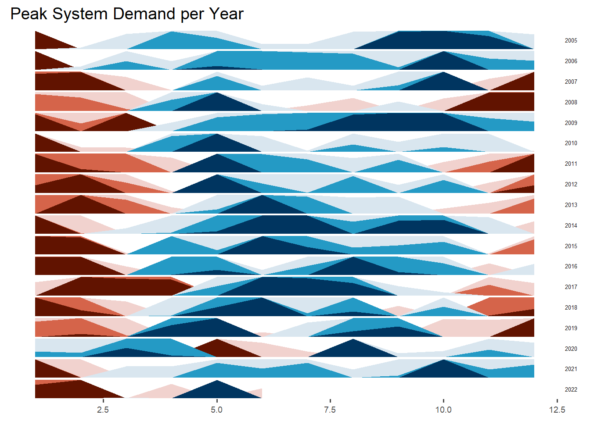

pacman::p_load(readxl, scales, viridis, lubridate, gridExtra, knitr, data.table, ggthemes, CGPfunctions, ggHoriPlot, gapminder, gganimate, ggbraid, ggstatsplot, ggiraph, plotly, performance, nortest, patchwork, tidyverse)Project Sketch
Drafting possible visualisation
Load R libraries
Load Dataset
T2.3 <- read_csv("data/T2-3.csv", show_col_types = FALSE)
T3.4 <- read_csv("data/T3-4.csv", show_col_types = FALSE)
T3.5 <- read_csv("data/T3-5.csv", show_col_types = FALSE)Peak System Demand
Heatmap
## Set up parameter
heatmap <- T2.3 %>%
mutate(year = factor(year),
mth = factor(mth, levels = 1:12))
## Plot heatmap for peak system demand
p_heatmap1 <-
ggplot(heatmap,
aes(mth,year, fill = peak_system_demand_mw)) +
geom_tile(color = "white", size =0.5) +
theme_tufte() +
coord_equal() +
scale_fill_gradient(name = "Thousand Dollars",
low = "lightblue",
high = "darkblue") +
labs(x = NULL, y = NULL,
title = "Peak System Deamnd by Year and Month") +
theme(axis.ticks = element_blank(),
plot.title = element_text(hjust = 0.5),
legend.title = element_text(size = 8),
legend.text = element_text(size = 6))
## Plot linegraphHorizon Plot
## Create date variable
horizonplot <- T2.3 %>%
mutate(monthyear = parse_date_time(paste0(year, "-", mth,"-1"),"ymd"))
## Plot horizonplot
horizonplot %>%
ggplot() +
geom_horizon(aes(x = mth, y=peak_system_demand_mw),
origin = "midpoint",
horizonscale = 6)+
facet_grid(`year`~.) +
theme_few() +
scale_fill_hcl(palette = 'RdBu') +
theme(panel.spacing.y=unit(0, "lines"), strip.text.y = element_text(
size = 5, angle = 0, hjust = 0),
legend.position = 'none',
axis.text.y = element_blank(),
axis.text.x = element_text(size=7),
axis.title.y = element_blank(),
axis.title.x = element_blank(),
axis.ticks.y = element_blank(),
panel.border = element_blank()
) +
xlim(1,12) +
# scale_x_date(expand=c(0,0), date_breaks = "1 month", date_labels = "%b") +
ggtitle('Peak System Demand per Year')